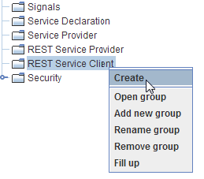
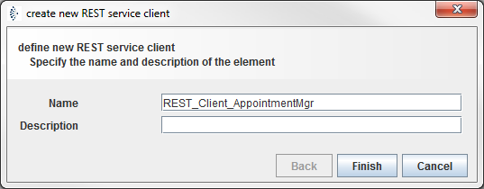
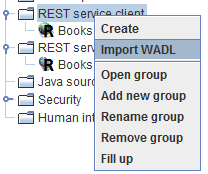
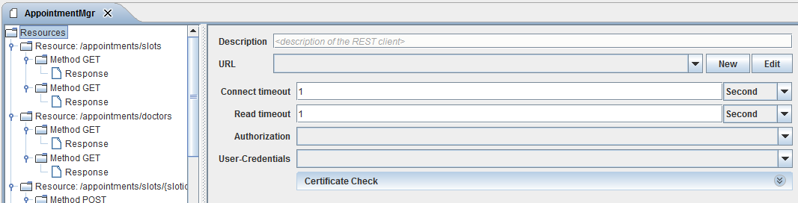

REST Service Client

Topic content
The purpose of the REST Service Client is to enable you to invoke REST web from an Orchestra process model.
Orchestra provides you with two different ways of creating a REST Service Clients. You can create it manually or by importing a WADL (Web Application Description Language) file definition.
Creation
In order to manually create a REST Service Client the following steps need to be performed:
1.Right Click on the REST Client Service option from orchestra designer main menu.
2.Select Create option to create a new REST Client Service entry.

3.In the opened dialog enter the Name and Description (optional) for your and click on the Finish button.

4.The user will be presented with the configuration panel for the created REST service client.
Import WADL file
WADL (Web Application Description Language) is an XML based language to describe REST web applications similar to WSDL which is used to describe SOAP web applications.
Orchestra provides you with an ability to create by importing WADL file definition.
1.Right Click on the REST service client group from Scenario element tree within the Orchestra designer.

2.Select option to create a new .
3.You will be presented with the Import Rest service description dialog.
4.Select the WADL file from your directory and click the button.
5.On the second screen name the REST Service and click on the button.
6.After clicking the Finish button, new REST service client object will be created and the configuration panel will be opened.
Configuration
1.Right Click on the created in designer menu and select the option in order to change name an description of your REST Service client.
2.Double click on your REST Service client in the scenario elements tree to open the configuration panel.
3.Click on the element of your REST service client object.

Figure – REST Service Client - resources configuration panel
•Description of the REST Service client object.
•URL of the REST Service client object determines the base path of your REST method calls. The value of the URL environment entry.
•Connection timeout determines the connection timeout of external REST web service.
•Read Timeout determines the read timeout of external REST web service.
•Authorization type for the selected REST web service.
•User-Credentials settings based on previously selected authorization value. The value of the existing Credential entry.
•Configuring serializers and deserializers used within the REST service
With a REST service typically JSON or XML data are sent over the TCP stream. The specific serializer/deserializer to use, is selected by the Content-Type. Therefore the serializers are configured at the root element of a REST service, that is within the resources element.
Seralizers in the context of a REST service
Most important is probably the JSON writer and the JSON reader. Within the context of REST services you cannot select a specific message type in the JSON writer. Instead you select the entry <configured type>.
In this case the message type is used which is configured in the request or response of the REST service using the Serializer to write JSON data.
|
On the left side of the image above, you can see the created elements the REST Service client. The parent node of the client is the Resources element which contains the URL information of your Rest web service. Resource child element contains more detail information about URL-Pattern of web service calls together with the list of implemented REST methods. |